Guida introduttiva · versione 1.0.0
Programmare con i diagrammi di flusso
Tutto quello che serve per usare OpenflowDiagram: creare un programma, eseguirlo passo passo, seguirne i valori con la tabella di traccia e tradurlo in C, C++, Java o Python.
1Benvenuto in OpenflowDiagram
OpenflowDiagram è un ambiente per imparare a programmare disegnando: invece di scrivere codice, costruisci un diagramma di flusso con blocchi grafici (dichiarazioni, input, output, condizioni, cicli…) e lo esegui subito. Puoi:
.fprg, lo stesso formato di Flowgorithm: puoi aprire i file creati con Flowgorithm e viceversa (per i blocchi supportati).2La finestra principale
All'avvio OpenflowDiagram mostra un programma vuoto. Questa è la finestra con un programma d'esempio appena eseguito:
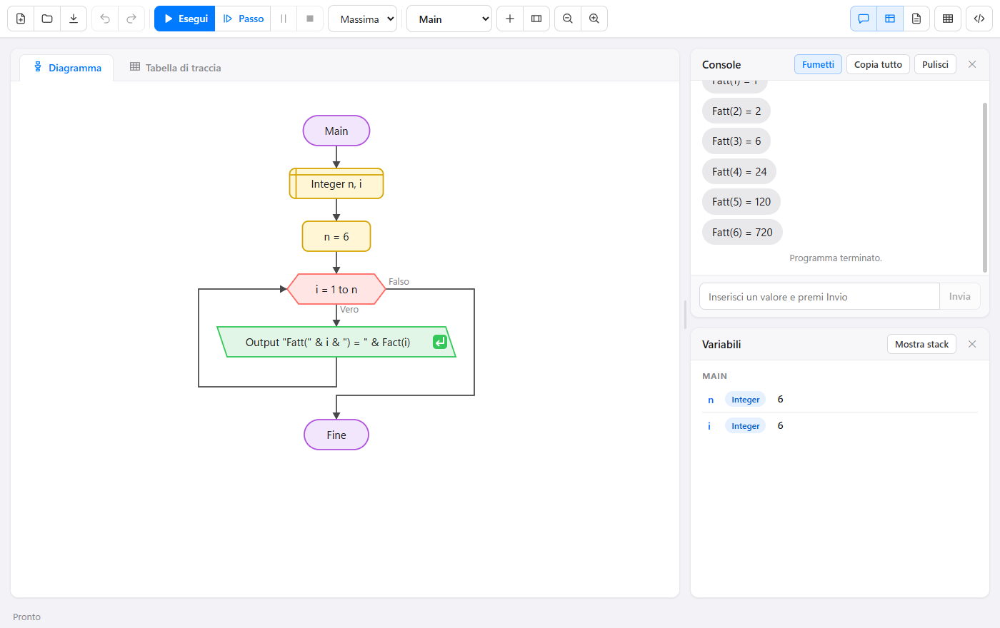
1 2 3 4 5 6 7 8 9 10- File: nuovo, apri, salva
- Esegui, Passo, Pausa, Ferma
- Velocità di esecuzione
- Funzione mostrata nel diagramma
- Schede Diagramma e Tabella di traccia
- Il diagramma di flusso
- Console: output e input
- Variabili e loro valori
- Tabella di traccia
- Finestra del codice sorgente
La barra dei menu (File, Modifica, Programma, Visualizza, Strumenti, Aiuto) contiene tutti i comandi, anche quelli che non hanno un pulsante. Console e Variabili si possono chiudere con la ✕ e riaprire con i pulsanti a destra della barra; il bordo tra diagramma e pannelli si trascina per cambiarne la larghezza.
3Il primo programma
Costruiamo un programma che chiede il nome e saluta: "Come ti chiami?" → Ada → "Ciao, Ada!"
Inserisci un blocco
Un programma nuovo contiene solo Main e Fine. Clicca sulla freccia tra i due: si apre il menu dei blocchi, diviso in Blocchi, Cicli, Altro e File. Ogni pulsante mostra la forma del blocco.
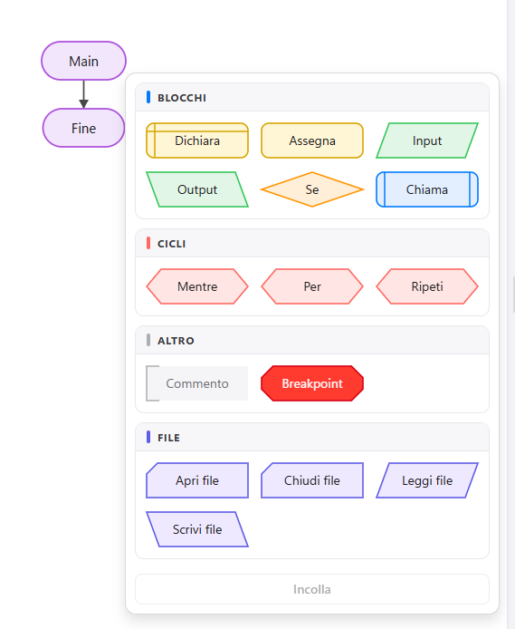
Dichiara una variabile
Scegli Dichiara. Nella finestra scrivi il nome nome e scegli il tipo String, poi OK.
Le variabili vanno sempre dichiarate prima di usarle.
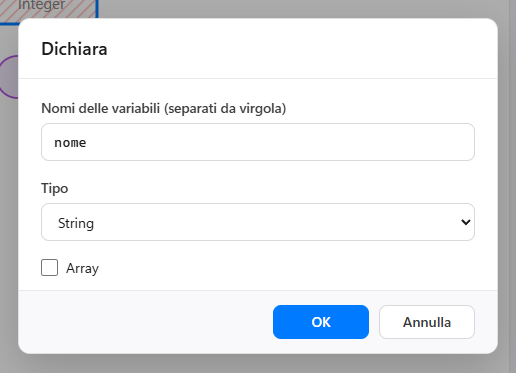
Aggiungi Output e Input
Clicca sulla freccia sotto String nome e scegli Output: scrivi "Come ti chiami?" (il testo va tra virgolette).
Poi, sotto, un blocco Input con la variabile nome, e infine un altro Output con
"Ciao, " & nome & "!" — il simbolo & unisce testi e valori.
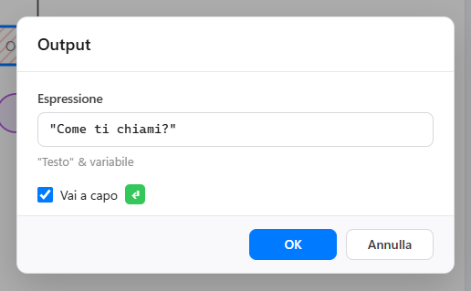
Controlla il diagramma
Il programma completo è questo. Se un campo è vuoto o un'espressione è sbagliata, OpenflowDiagram te lo dice subito nella finestra del blocco; un blocco lasciato vuoto appare tratteggiato.
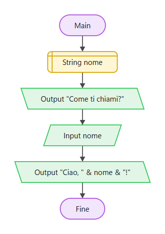
Esegui e rispondi
Premi Esegui (F5). Quando il programma arriva al blocco Input, la casella in fondo alla Console si illumina: scrivi la risposta e premi Invio.
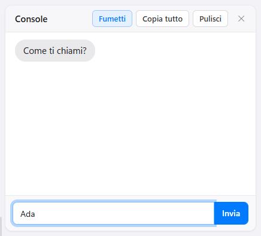
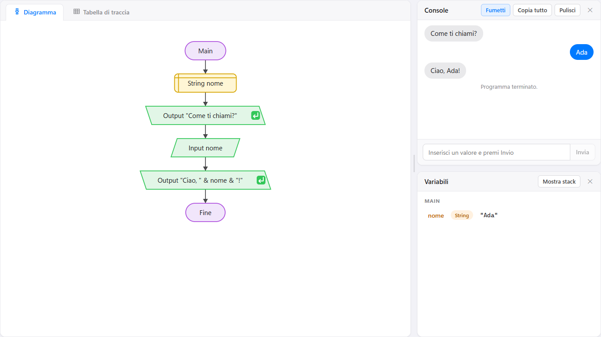
nome nel pannello Variabili.Salva
Usa File › Salva (Ctrl+S). Il pallino • nel titolo della finestra indica modifiche non salvate.
4I blocchi
| Blocco | A cosa serve | Esempio |
|---|---|---|
| Crea una o più variabili di un tipo (Integer, Real, String, Boolean), anche come array. | Integer n, i · Real Array voti[10] | |
| Calcola un'espressione e ne mette il risultato in una variabile. | somma = somma + x | |
| Chiede un valore all'utente nella Console e lo salva in una variabile. | Input nome | |
| Mostra un valore o un testo nella Console. Il simbolo nel blocco indica se poi va a capo (↵) o se il prossimo output continua sulla stessa riga (→). | Output "Ciao, " & nome | |
| Sceglie tra due rami in base a una condizione: Vero a destra, Falso a sinistra. | Se voto >= 6 | |
| Esegue una funzione che non restituisce valori. | Ordina(v) | |
| Ripete il corpo finché la condizione è vera (controllo all'inizio). | Mentre n != 1 | |
| Ripete con un contatore da un valore iniziale a uno finale, crescente o decrescente, con passo. | Per i = 1 to 10 step 2 | |
| Esegue il corpo almeno una volta e lo ripete finché la condizione è vera (controllo alla fine). | Ripeti … mentre risposta != "no" | |
| Una nota nel diagramma: non viene eseguita. | Calcolo della media | |
| Mette in pausa l'esecuzione in quel punto (sempre o solo se una condizione è vera). | Breakpoint: i == 5 | |
| Apre un file di testo in lettura o in scrittura. | Apri file "dati.txt" (Lettura) | |
| Legge la riga successiva del file in una variabile. | Leggi file x | |
| Scrive un valore come nuova riga del file. | Scrivi file totale | |
| Chiude il file aperto (i dati scritti vengono salvati). | Chiudi file |
Lavorare con i blocchi
- Modificare: doppio clic sul blocco (oppure selezionalo e premi Invio).
- Selezionare più blocchi: clic sul primo e Shift+clic sull'ultimo (devono essere nello stesso ramo).
- Tagliare, copiare, incollare, eliminare: clic destro sul blocco, oppure Ctrl+X/C/V e Canc. Per incollare in un punto preciso, clicca la freccia e scegli Incolla in fondo al menu.
- Annullare: Ctrl+Z e Ctrl+Y annullano e ripetono qualsiasi modifica.
- Zoom: pulsanti lente nella barra, oppure Ctrl+rotellina.
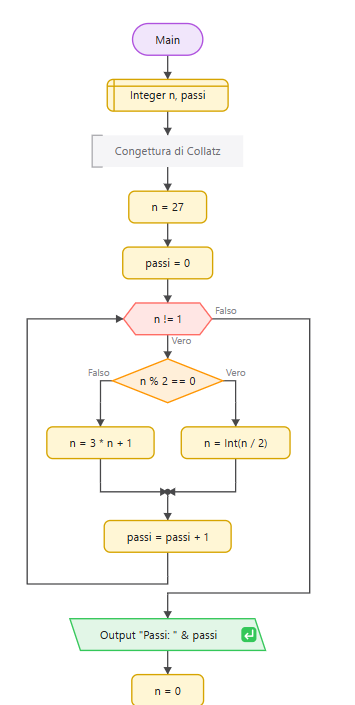
5Tipi, operatori e funzioni
Tipi
| Tipo | Valori |
|---|---|
| Integer | numeri interi: 42, -7 |
| Real | numeri con la virgola: 3.14 |
| String | testo: "ciao" |
| Boolean | true o false |
Operatori
| Operatore | Significato |
|---|---|
+ - * / | aritmetica (/ dà sempre un Real: 7 / 2 = 3.5) |
% o mod | resto della divisione |
^ | potenza: 2 ^ 10 |
& | unisce testi e valori |
== != < <= > >= | confronti (anche = e <>) |
and or not | logica (anche && || !) |
Funzioni predefinite
| Funzione | Risultato |
|---|---|
Abs(x) | valore assoluto |
Sqrt(x) | radice quadrata |
Int(x) | parte intera (tronca i decimali) |
Sgn(x) | segno: -1, 0 o 1 |
Random(n) | numero intero casuale da 0 a n-1 |
Log(x), Log10(x) | logaritmo naturale e in base 10 |
Sin, Cos, Tan(x) | funzioni trigonometriche (radianti) |
ArcSin, ArcCos, ArcTan(x) | funzioni inverse |
Len(s) | lunghezza di una stringa |
Char(s, i) | carattere in posizione i (da 0) |
ToCode(s) | codice del primo carattere |
ToChar(n) | carattere con codice n |
ToInteger(x) | converte in Integer (anche da testo) |
ToReal(x) | converte in Real |
ToString(x) | converte in testo |
ToFixed(x, d) | testo con d cifre decimali |
Size(a) | numero di elementi di un array |
EOF() | vero se il file aperto in lettura è finito |
Pi | la costante π |
Integer Array v[5] ha gli elementi v[0] … v[4]. Maiuscole e minuscole nei nomi non contano (Somma e somma sono la stessa variabile).6Eseguire e fare debug
| Pulsante | Cosa fa |
|---|---|
| Esegui F5 | Esegue il programma alla velocità scelta; durante una pausa, riprende. |
| Passo F10 | Esegue un blocco alla volta: il blocco evidenziato in arancione è quello che sta per essere eseguito. |
| Pausa F6 | Ferma temporaneamente un programma in esecuzione. |
| Ferma Shift+F5 | Interrompe il programma. |
| Velocità | Lenta, Media, Veloce (per seguire l'evidenziazione) o Massima (risultato immediato). |
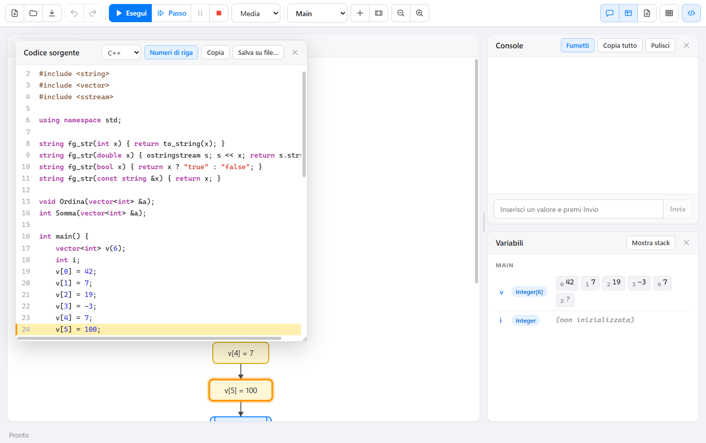
Breakpoint
Un blocco Breakpoint mette in pausa il programma quando viene raggiunto (sempre, oppure solo se una condizione è vera). Da lì puoi continuare con Esegui o con Passo. Programma › Ignora i breakpoint li salta tutti, Rimuovi tutti i breakpoint li elimina.
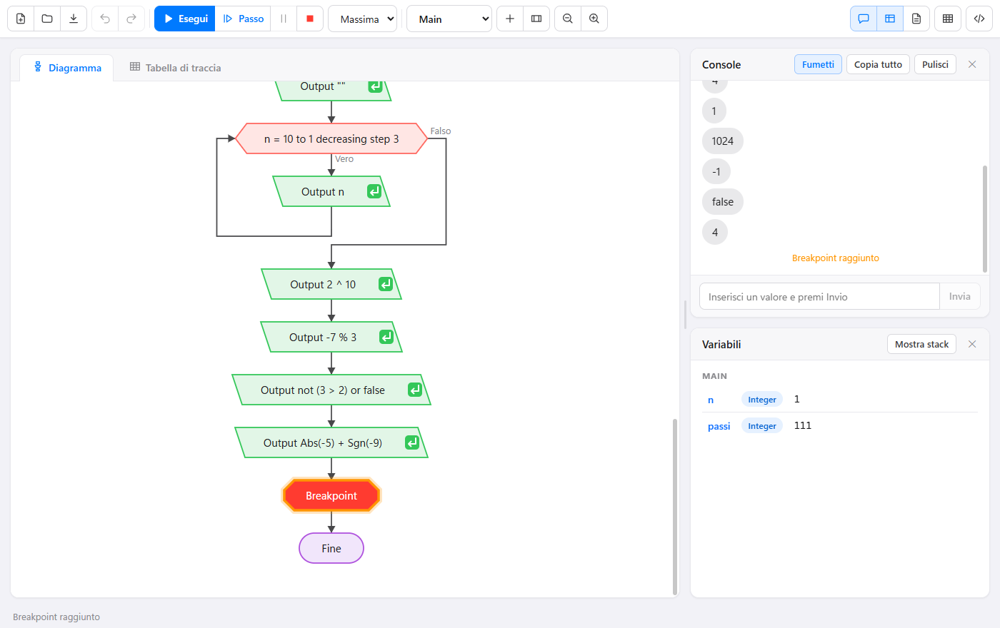
Errori
Se qualcosa va storto (divisione per zero, variabile non inizializzata, indice fuori dall'array…) OpenflowDiagram si ferma, evidenzia in rosso il blocco responsabile e spiega il problema in italiano.
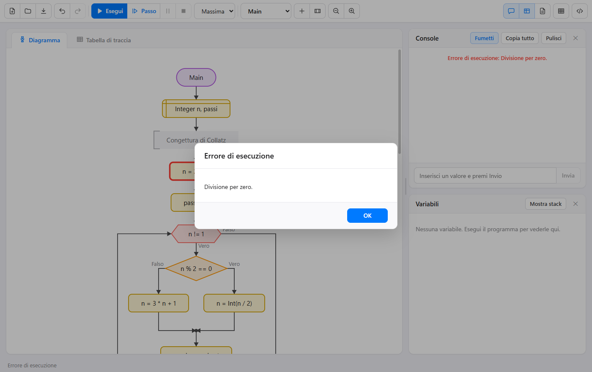
n = 27 / 0 è evidenziato in rosso.7Console e Variabili
La Console mostra l'output e raccoglie l'input. Con Fumetti attivo i messaggi appaiono come in una chat (programma a sinistra, tu a destra); disattivandolo diventa un terminale classico. Copia tutto copia il contenuto, Pulisci lo svuota.
Il pannello Variabili mostra il valore di ogni variabile mentre il programma gira; ? indica una variabile non ancora
inizializzata. Con Mostra stack vedi anche le variabili delle funzioni chiamanti:
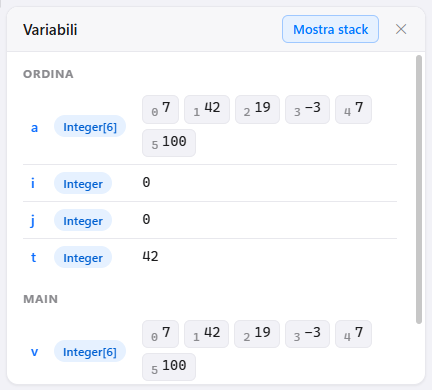
8Funzioni
Un programma può avere, oltre a Main, altre funzioni. Usa il pulsante + della barra (o Programma › Aggiungi funzione) e scegli nome, tipo restituito, variabile restituita e parametri. Il menu a tendina nella barra mostra la funzione da modificare.
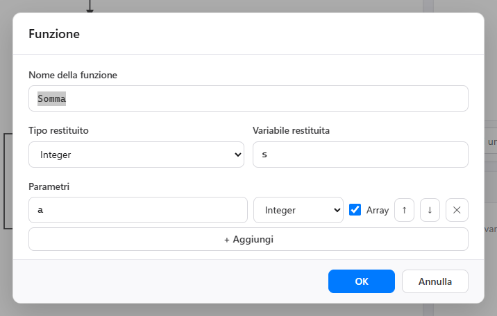
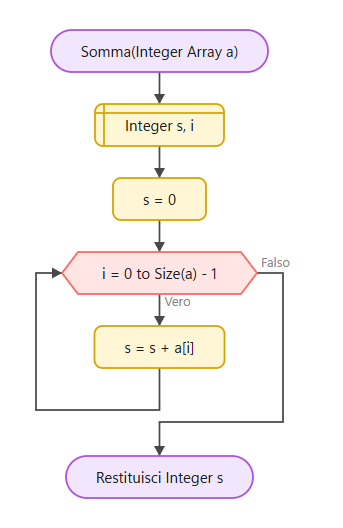
s.- Una funzione che restituisce un valore si usa nelle espressioni:
"Somma = " & Somma(v). - Una funzione senza valore (tipo Nessuno) si esegue con il blocco Chiama.
- I parametri normali ricevono una copia del valore; gli array sono passati per riferimento (la funzione può modificarli).
- Doppio clic sul blocco iniziale di una funzione per modificarne la definizione.
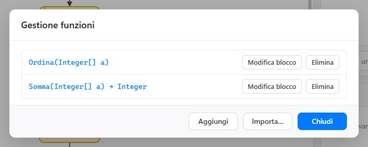
9Codice sorgente
Il pulsante Codice (F4) apre una finestra mobile con il programma tradotto in C, C++, Java o Python. La traduzione si aggiorna mentre modifichi il diagramma e, durante l'esecuzione, evidenzia la riga del blocco corrente. Trascina la finestra dal titolo e ridimensionala dall'angolo in basso a destra.
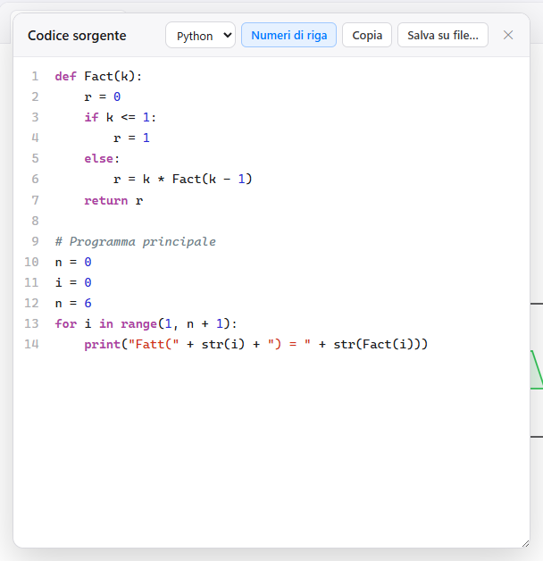
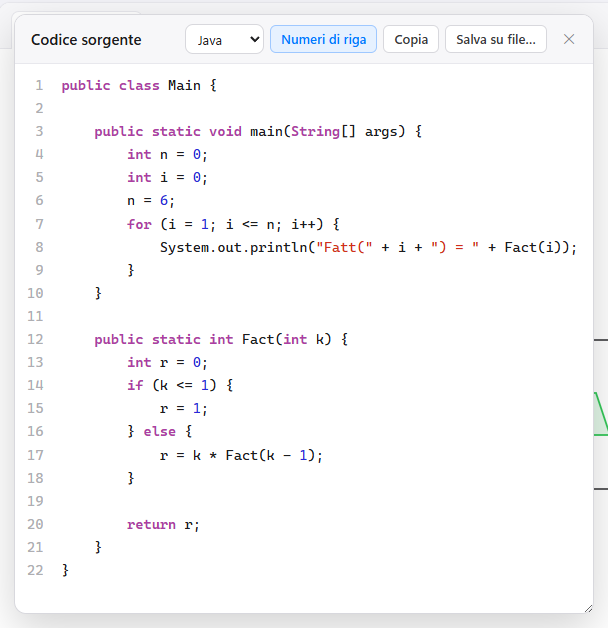
.c, .cpp, .java, .py), pronto da compilare o eseguire.10Tabella di traccia
La tabella di traccia è il modo classico per capire cosa fa un algoritmo: una riga per ogni blocco eseguito, con i valori delle variabili e l'esito delle condizioni. Si apre con il pulsante Traccia (F7) e compare in una scheda accanto al diagramma.
1. Scegli cosa tracciare
La prima volta OpenflowDiagram chiede quali variabili seguire (raggruppate per funzione) e quali espressioni o condizioni
calcolare a ogni passo, per esempio i % 2 == 0. Puoi cambiare la scelta con Scegli valori….
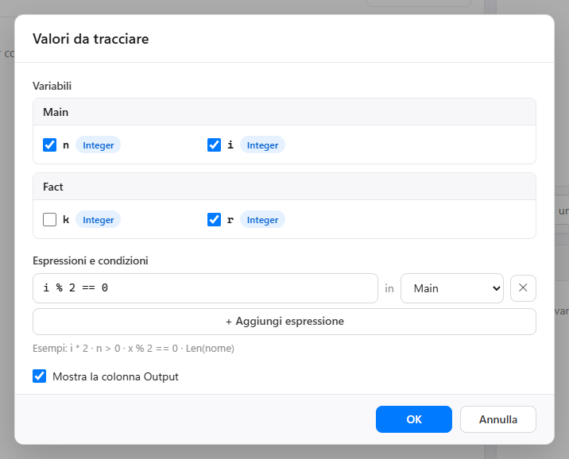
2. Costruiscila passo passo
Premi Passo: a ogni blocco eseguito si aggiunge una riga, e l'ultima è evidenziata. I valori appena cambiati sono in giallo, le condizioni mostrano Vero o Falso.
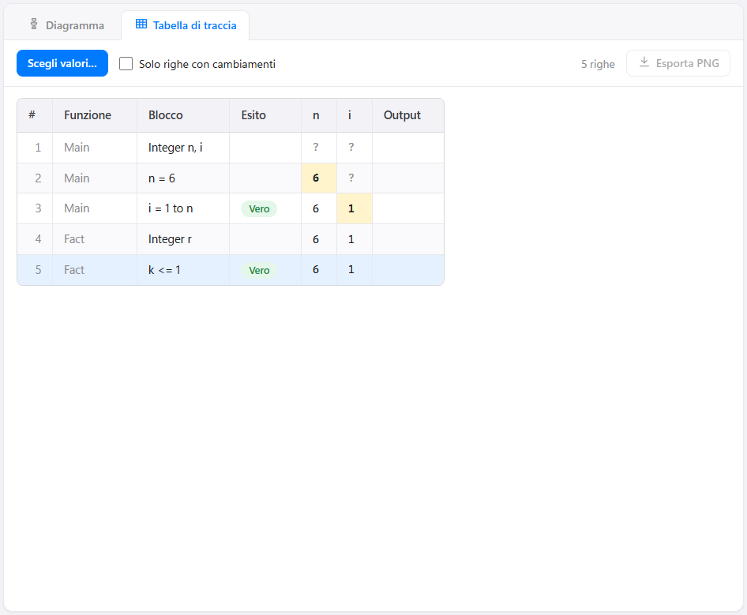
3. Completa ed esporta
Con Esegui la tabella si completa. Solo righe con cambiamenti nasconde le righe in cui non cambia nulla; Esporta PNG salva un'immagine della tabella, ideale per consegne e appunti.
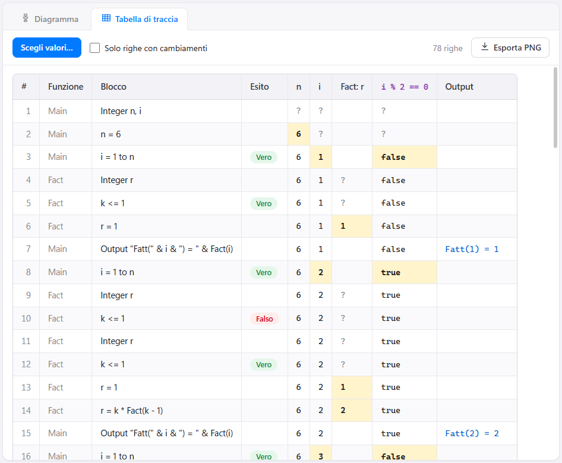
11File, salvataggio ed esportazione
Leggere e scrivere file
I blocchi Apri file, Leggi file, Scrivi file e Chiudi file lavorano su file di testo, una riga per valore.
Il nome del file è relativo alla cartella del programma salvato (o a Documenti, se il programma non è ancora salvato).
EOF() dice quando il file è finito.
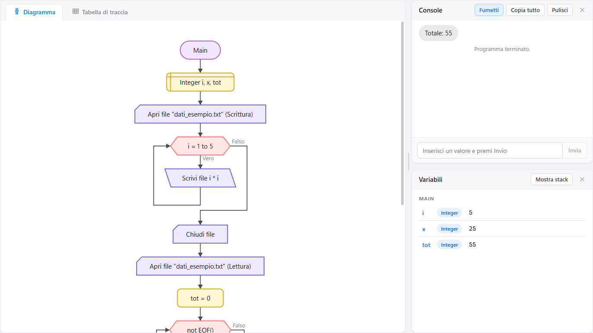
Vedere il contenuto dei file
Il pulsante File della barra apre il pannello omonimo, che mostra il contenuto dei file usati dal programma (quelli nominati nei blocchi Apri file). Si aggiorna mentre il programma gira, anche passo passo:
- in lettura, le righe già lette sono attenuate e la prossima riga da leggere è evidenziata;
- in scrittura, le righe compaiono man mano che vengono scritte (su disco vengono salvate alla chiusura del file);
- a programma fermo mostra il file com'è sul disco. Con Apri… puoi vedere anche qualsiasi altro file di testo, per esempio per controllare i dati da leggere.
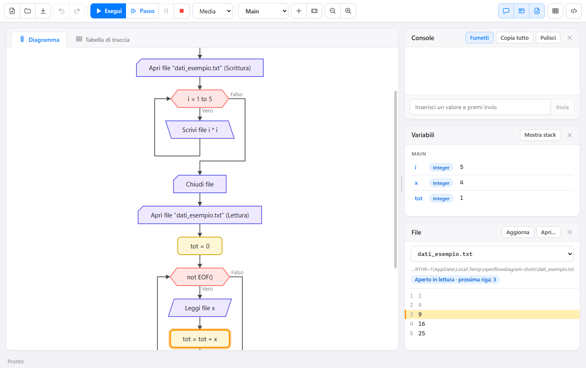
x vale 4) e nel pannello File è evidenziata la terza, la prossima che Leggi file leggerà.Salvare, aprire, esportare
- File › Salva / Apri: programmi in formato
.fprg; puoi anche trascinare un file sulla finestra. - File › Recenti: gli ultimi file usati. File › Esempi: programmi pronti (si aprono come copie senza nome).
- File › Esporta immagine PNG / SVG: il diagramma della funzione mostrata.
- File › Stampa: stampa tutte le funzioni, una per pagina.
- Programma › Attributi del programma: nome, autori e descrizione salvati nel file.
12Personalizzare OpenflowDiagram
Da Strumenti › Impostazioni scegli lingua (italiano o inglese), schema colori, stile del diagramma, linguaggio predefinito per il codice e profondità massima delle chiamate.
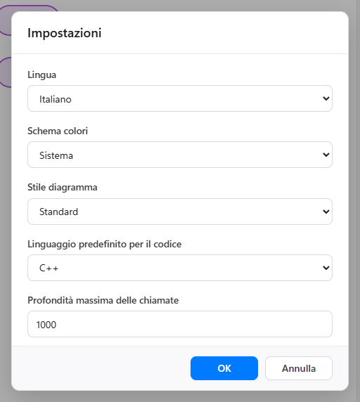
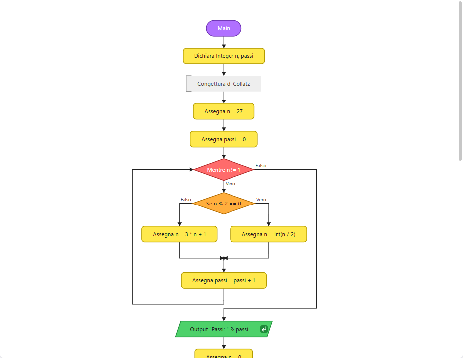
Schemi colore: Sistema (predefinito), Pastello, Vivace, Bianco e nero (adatto alla stampa), Progetto. Stili: Standard, Descrittivo (ogni blocco mostra anche il suo nome) e Classico (forme tradizionali). Si cambiano al volo anche da Visualizza.
13Scorciatoie da tastiera
| Tasti | Azione |
|---|---|
| Ctrl+N | Nuovo programma |
| Ctrl+O | Apri |
| Ctrl+S | Salva |
| Ctrl+Shift+S | Salva con nome |
| Ctrl+P | Stampa |
| Ctrl+Z | Annulla |
| Ctrl+Y | Ripeti |
| Ctrl+X / C / V | Taglia, copia, incolla blocchi |
| Canc | Elimina i blocchi selezionati |
| Invio | Modifica il blocco selezionato |
| Esc | Deseleziona / chiude una finestra |
| F5 | Esegui (o continua) |
| F10 | Passo |
| F6 | Pausa |
| Shift+F5 | Ferma |
| F4 | Mostra/nascondi il codice sorgente |
| F7 | Tabella di traccia |
| Ctrl+= / Ctrl+- | Ingrandisci / riduci il diagramma |
| Ctrl+0 | Zoom 100% |
| Ctrl+rotellina | Zoom con il mouse |
| F1 | Questa guida (Aiuto › Guida introduttiva) |
14Esempi ed esercizi
In File › Esempi trovi:
| Esempio | Cosa mostra |
|---|---|
| Fattoriale | ciclo Per e funzione ricorsiva |
| Ordinamento | array, funzioni con parametri array (bubble sort e somma) |
| Cicli | Mentre, Ripeti, Per decrescente, Se annidati, breakpoint |
| Input | lettura di testi, numeri e valori Boolean |
| Stringhe | Len, Char, ToCode, ToChar, confronti tra testi |
| File | scrittura e lettura di un file di testo |
Esercizi per iniziare
- Pari o dispari — chiedi un numero e scrivi se è pari o dispari (suggerimento:
n % 2 == 0). - Tabellina — chiedi un numero e stampa la sua tabellina da 1 a 10 con un ciclo Per.
- Indovina il numero — il programma sceglie
Random(100) + 1e risponde "più alto" o "più basso" finché non indovini (ciclo Ripeti). - Media dei voti — leggi 5 voti in un
Real Arraye calcola la media; usaToFixed(media, 2)per l'output. - Massimo con funzione — scrivi una funzione
Massimo(Integer Array a)che restituisce il valore più grande e seguila con la tabella di traccia.
15Domande frequenti
- Il programma non parte e un blocco è tratteggiato.
- Il blocco è incompleto: fai doppio clic e compila i campi.
- «La variabile … non è stata inizializzata».
- La variabile è dichiarata ma non ha ancora un valore: assegnale un valore o leggila con Input prima di usarla.
- «Tipo del valore incompatibile».
- Stai mettendo, per esempio, un Real in una variabile Integer: usa
Int(…)o dichiara la variabile Real. - Il programma non finisce mai.
- Probabilmente un ciclo infinito: premi Ferma e controlla che la condizione del ciclo possa diventare falsa.
- Voglio vedere un ciclo lentamente.
- Scegli la velocità Lenta, oppure usa Passo e la tabella di traccia.
- Come cambio lingua?
- Strumenti › Impostazioni › Lingua (Tools › Settings in inglese).